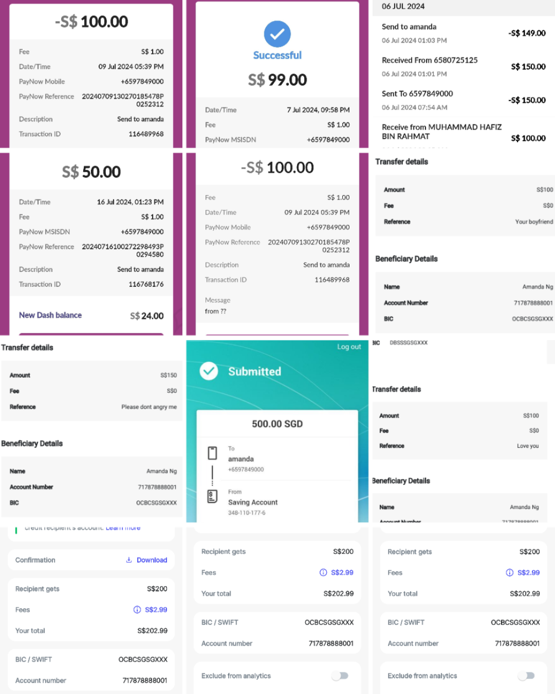
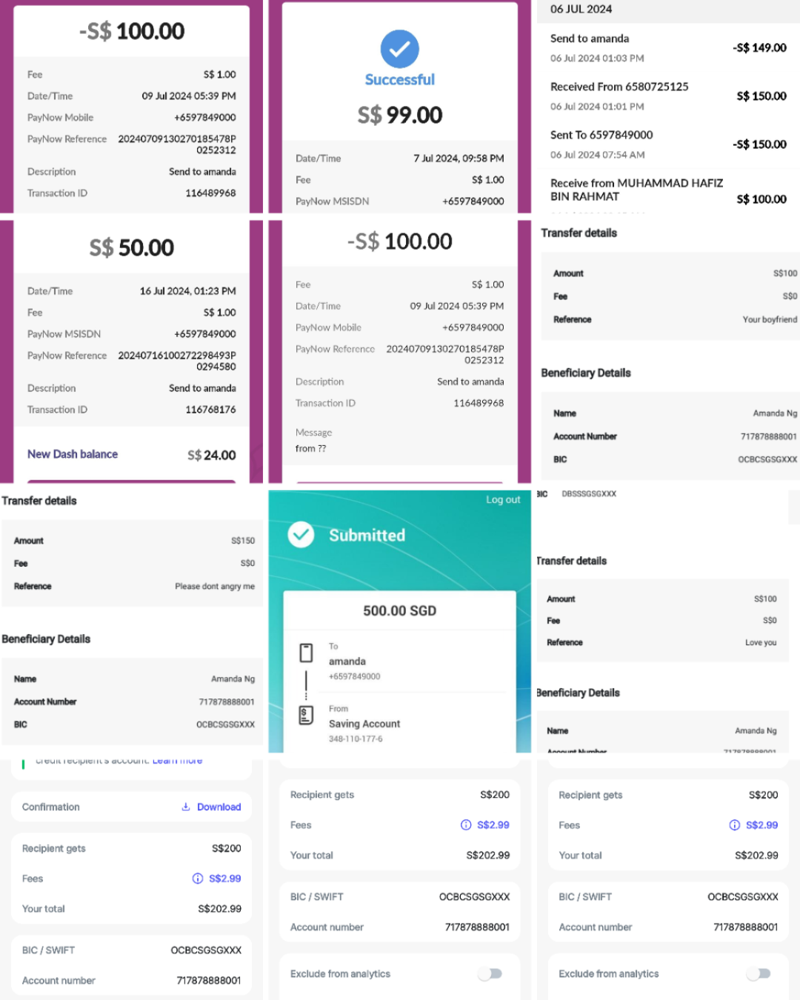

Cautionary Affidavit: Amanda Tay Ke Xin’s Deceitful Schemes
This affidavit serves as a formal record and public warning about the manipulative actions of Amanda Tay Ke Xin, 23 Years old, between July 2024 and June 2025. It outlines a disturbing pattern of calculated deceit, financial exploitation, emotional manipulation, and deliberate betrayal of those who trusted her.
📍 July 2024 – The Setup
Amanda first encountered the undersigned through professional settings, but quickly shifted conversations into flirtation. She gave the impression of romantic interest and long-term intent, while citing financial trouble related to a failed vape business. Believing her, the undersigned provided SGD $2,000 in support, unaware this was the beginning of an intentional financial drain.
📍 August 2024 – Hidden Winnings, Continued Lies
Communication waned as Amanda grew distant. Unknown to the undersigned, Amanda had won SGD $17,000 from online gambling—ironically, a platform he had introduced to her. She concealed the win and kept asking for money, pretending to be in crisis. On 16 August 2024, she admitted to lying, saying she was "complaining for fun," yet still accepted another SGD $400. This showcased a blatant abuse of trust and intent to defraud.
📍 Infidelity & Emotional Sabotage
Amanda’s duplicity extended beyond money. Her roommate confirmed she hosted other men at her residence, even as she maintained a romantic front with the undersigned. He also overheard male voices during calls and witnessed her flirting via video with others. When confronted, Amanda deflected blame and accused him of being insecure—an intentional tactic to destabilize and control.
📍 October 2024 – False Allegations, Financial Extraction
She reappeared claiming to be a victim of molestation, begging for help. Upon investigation, it was revealed she had entered the accused’s home willingly. Still, the undersigned covered a SGD $2,000 “settlement” and mattress replacement. Once funds were transferred, Amanda vanished—without a word or proof of her claims.
📍 June 2025 – The Recycled Sympathy Act
Visibly unhealthy and financially desperate, Amanda returned playing the role of the broken woman. She claimed renewed loyalty and a desire to rebuild trust. The undersigned, moved by her state, again offered financial help—including money for gambling. Predictably, Amanda reverted to her manipulative behaviors soon after.
📍 31 May 2025 – The KPod Deception
Amanda handed the undersigned an almost-empty vape pod while concealing a full one in her clothing—found during a hug. When questioned, she changed her story multiple times. She had also already taken SGD $250 for KPods she never delivered. The incident was petty, but telling—revealing her instinct for deception even in small things.
📍 Final Exploitation & Cutoff
After extracting over SGD $2,400 in emotional and financial aid, Amanda admitted she no longer needed the undersigned and coldly cut him off. She had never disclosed her gambling windfall during their ongoing exchanges and continued taking money post-win. Her final act was taking one last SGD $400 and discarding the man who believed in her.
📍 Observed Pattern of Deceit
- Created romantic illusions to exploit sympathy and finances
- Used false hardships and shifting stories for personal gain
- Repeated emotional manipulation and intentional gaslighting
- Maintained simultaneous relationships for profit and attention
- Showed no remorse or accountability after extraction
Amanda Tay Ke Xin has demonstrated a repeated, premeditated pattern of using trust as currency—then discarding her victims once she benefits. To this day, she has not apologized or repaid any funds. This affidavit stands as both a factual record and a warning to others who may cross paths with her.
Sworn at: Singapore
Date: 5 June 2025
SG AHSIAO
(Signature verified with Singpass)
Council of Underground Chamber
Commissioner for Oaths
📤 Share this cautionary post with others:
 
